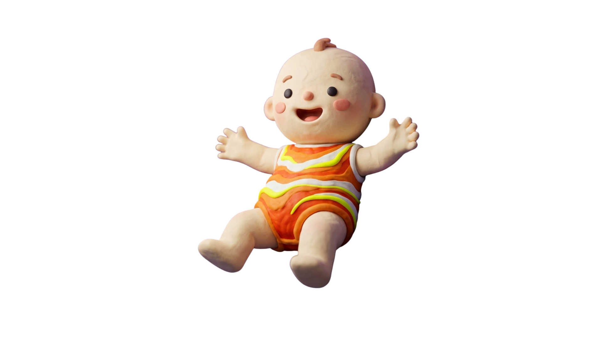

베비티아이
10문항으로 알아보는
우리 아기 성향
📚 Rothbart IBQ-R · Pluess(2015) 환경 민감성 모델 기반
1 / 10
우리 아기 성향은...
📊 9가지 유형 좌표
외향성(가로) × 환경 민감성(세로) 축으로 본 우리 아기의 위치
민감성
높음
낮음
낮음
높음
외향성
🌟 비슷한 성향으로 추정되는 인물
※ 성격 유형 매칭은 재미 요소로, 과학적 근거에 기반한
내용이 아닙니다
내용이 아닙니다
📖 이론적 근거
💡
우리 아기에게
잘 맞는 육아 팁
잘 맞는 육아 팁